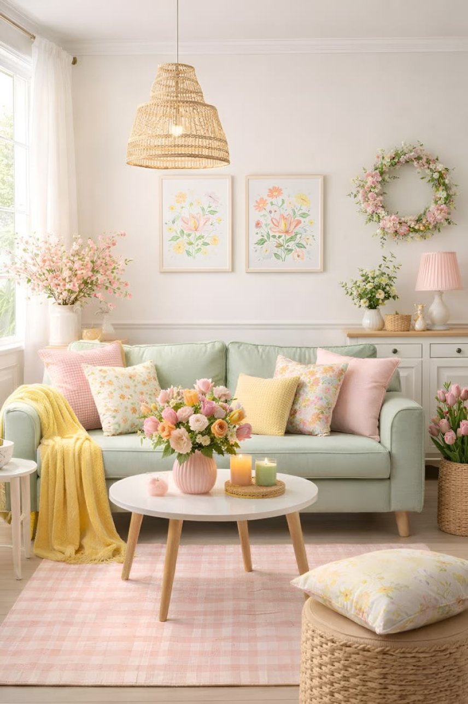

Oct 12, 2024
Warmth in Modernity: Redefining
the Hearth
How we integrated heritage wood craftsmanship with brutalist architecture in our latest London penthouse project.

Oct 08, 2024
The Sculptural Object: Curating
Silhouettes
Selecting furniture as sculpture. A guide to choosing pieces that command presence through form alone.

Process
Sep 28, 2024
Tactile Narratives: The Language of
Materials
Beyond aesthetics—how the texture of a room
influences our emotional state and daily rhythm.